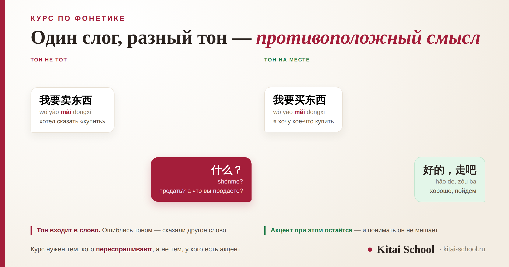
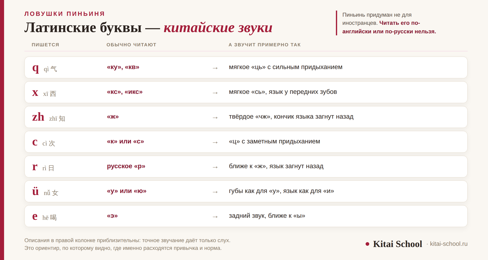

Выбор программы
Курс по фонетике китайского языка: тоны, пиньинь и как перестать говорить по-русски китайскими словами


Ситуация знакомая: слова вы знаете, фразу собрали правильно — а в ответ слышите 什么？ (shénme) — «что?». Курс по фонетике китайского языка ищут именно после такого. Разберём, кому отдельный курс действительно нужен, а кому нет; что должно быть в программе и по каким признакам программу стоит пропустить; и почему пиньинь нельзя читать ни по-английски, ни по-русски. Как именно ставят тоны и звуки, у нас разобрано отдельно — здесь речь о выборе курса.
Отдельный курс нужен не всем: если вас понимают с первого раза, произношение улучшится по ходу обычных занятий. Тон меняет слово, акцент — нет, и силы стоит тратить на первое. Пиньинь — не транскрипция для русских, а официальная запись, принятая в КНР в 1958 году. «Цзайцзянь» — это система Палладия, способ написать слово по-русски, а не сказать его. В программе должно быть шесть вещей, и первая из них — работа со слухом раньше работы с речью.
Кому нужен отдельный курс, а кому нет
Начнём с того, что курс фонетики продают всем подряд, а нужен он не всем. Отдельная работа над произношением оправдана в двух случаях.
- Вас регулярно переспрашивают, хотя слова вы знаете и грамматику собираете верно. Это и есть основной признак: проблема не в словарном запасе.
- Вы учили язык самостоятельно и ни разу не слышали себя со стороны. Тут дело не в способностях: без обратной связи ошибка закрепляется молча, и чем дольше, тем труднее её потом переучивать.
А вот если носители понимают вас с первого раза и переспрашивают не чаще, чем любого иностранца, отдельный курс не нужен. Произношение станет лучше по ходу обычных занятий, и деньги разумнее потратить на лексику или на разговорную практику — про неё у нас есть курс по разговорной речи.
Проверить себя просто: запишите на телефон минуту своей речи и дайте послушать носителю или преподавателю. Если вас поняли без уточнений — вопрос закрыт.
Тон меняет слово. Всё остальное — акцент
Это главное разделение, и от него зависит, за что вы платите на курсе. Тон входит в слово: 妈 mā — «мама», 麻 má — «конопля», 马 mǎ — «лошадь», 骂 mà — «ругать». Слог один и тот же, слова разные. Ошиблись тоном — сказали другое слово, и собеседник честно не понял.
Акцент — всё остальное: мягкость звуков, ритм, лёгкий русский призвук. Он не меняет ни одного слова и понимать вам не мешает. Подробнее мы разводили эти два понятия в разборе курса по разговорной речи.
Практический вывод для выбора курса: хорошая программа тратит время на тоны и почти не тратит на избавление от акцента. Если в описании курса обещают «speak like a native» и убрать акцент — это продажа невозможного вместо решения вашей задачи.
Пиньинь — не транскрипция для русских
Вторая по частоте причина, по которой человека не понимают, — он читает пиньинь так, как привык читать латиницу.
Пиньинь — это официальная система записи китайских слогов латиницей, принятая в КНР в 1958 году. Сегодня это международный стандарт: на него перешли ООН, Международная организация по стандартизации и библиотечные каталоги. Но задумывался он не как подсказка для иностранцев, а как рабочая запись для самих китайцев: по нему учат чтению в школе и набирают текст на телефоне.
Отсюда главное: латинские буквы в пиньине обозначают китайские звуки, а не английские. Что именно обозначают буквы и чем пиньинь отличается от алфавита — в разборах про китайскую письменность и буквы в китайском.
«Цзайцзянь» и откуда он взялся
Есть и третий слой путаницы, чисто русский. Рядом с пиньинем существует система Палладия — русская транскрипция, созданная для того, чтобы единообразно записывать китайские имена и названия кириллицей в русских текстах.
Она делает ровно одну работу: даёт единый способ написать китайское слово по-русски. Инструкцией по произношению она не является и никогда ею не была. «Цзайцзянь», «шэньмэ», «нихао» — это написание, а не звучание. Если читать их вслух буквально, получится та самая русская речь с китайскими словами. Как 再见 звучит на самом деле, разбирали отдельно: как на самом деле читается 再见.

В таблице видно, что ловушек немного — их можно пересчитать по пальцам. Но каждая встречается в первых же словах, которые учит начинающий, и потому закрепляется прочно.
Что должно быть в программе курса
Описания курсов похожи одно на другое, поэтому проще смотреть не на обещания, а на шесть конкретных пунктов.
| Пункт | Зачем он нужен |
|---|---|
| Слух раньше речи | человек воспроизводит то, что различает. Пока разница между тонами не слышна, повторять бесполезно |
| Минимальные пары | слова, отличающиеся одним признаком: так ухо учится ловить именно его, а не догадываться по смыслу |
| Запись вашего голоса | в записи слышно то, чего не слышно изнутри. Без этого пункта курс почти бесполезен |
| Тоны в связках | отдельный слог получается у всех. Трудность начинается, когда слогов два и три подряд |
| Изменение тонов в потоке речи | два третьих тона подряд читаются не так, как записаны; у 一 и 不 тон меняется от соседа. Без этого речь звучит ненатурально даже при верных тонах |
| Обратная связь на каждом занятии | преподаватель слышит и поправляет сразу. Ошибка, прожившая месяц, переучивается дольше, чем ставилась |
Последний пункт — самый дорогой в производстве и потому первый, который убирают. В записанном курсе без живого преподавателя его нет вовсе, и это стоит понимать до оплаты.
Студент пришёл с запросом «поставьте мне произношение» и с готовым мнением о том, как это делается. Год он занимался по видеокурсу: смотрел схемы положения языка, повторял за диктором, выучил таблицу слогов почти целиком.
На первом занятии я попросила его сказать простую фразу и записала её на диктофон. Потом включила запись ему. Он послушал дважды и сказал: «Это не то, что я говорил».
Так и было. Год он слышал в своей голове образец, а произносил другое — и поправить это было некому. Мы начали не с артикуляции, а со слуха: пары слов, где отличие ровно в одном признаке. Через три недели он стал слышать разницу, и дальше дело пошло само.
Чего в программе быть не должно
Четыре признака, по которым курс можно спокойно пропустить.
- Таблица слогов наизусть. Полная таблица — справочник, а не учебный материал. Заучивать её целиком незачем: нужные слоги приходят вместе со словами.
- Обещание поставить произношение за одно занятие. За одно занятие можно услышать свои ошибки. Переучить привычку — нет.
- Только теория: артикуляция, схемы, положение языка. Описание полезно как подсказка, но звук ставится повторением с обратной связью, а не чтением про него.
- Курс без записи вашего голоса. Если за программу вы ни разу себя не услышали, проверить результат нечем — ни вам, ни преподавателю.
Группа или один на один: что работает для фонетики
Для грамматики и лексики группа чаще выигрывает: разбор правила слушают все сразу, а говорить по очереди даже полезно. С произношением иначе, и причина простая — поправить можно только то, что слышно.
В группе из восьми человек преподаватель физически не успевает выслушать каждого настолько, чтобы заметить, что у вас третий тон превращается во второй. Он услышит грубые ошибки и пропустит мелкие — а именно мелкие и определяют, переспросят вас или нет.
| Формат | Что получится | Чего не получится |
|---|---|---|
| Группа | разобрать систему тонов, натренировать слух на общих упражнениях, снять страх говорить | разбор именно вашей ошибки на каждом занятии |
| Индивидуально | точечная правка, запись и разбор вашей речи, темп под вас | дороже за час |
| Запись без преподавателя | теория, образцы для повторения, упражнения на слух | обратная связь — её нет вовсе |
Разумная середина выглядит так: несколько индивидуальных занятий на постановку, дальше группа или обычный курс, где произношение поддерживают по ходу. Платить за индивидуальный формат весь год ради одной фонетики незачем — задача решается за понятное число встреч и дальше переходит в режим поддержания.
Сколько это занимает и когда начинать
Честный ответ — вилка, потому что всё зависит от стартовой точки и частоты занятий. Базовую работу над тонами и трудными звуками обычно укладывают в несколько недель регулярных занятий. Привычка держать тон в быстрой речи закрепляется дольше и уже по ходу общих уроков.
Разброс берётся из трёх вещей: сколько вы уже говорили неправильно, как часто занимаетесь и насколько родной язык помогает или мешает. Русскоязычным, например, легче даётся ритм и труднее — различение придыхания, потому что в русском оно не меняет смысла слова.
Начинать лучше раньше. Причина не в мотивации, а в арифметике: поставить звук с нуля быстрее, чем переучить тот, который вы год произносили иначе. Поэтому фонетика стоит первой в последовательности обучения — об этом в разборе этапы изучения китайского, а с чего вообще начинать, если вы в самом начале, — в статье изучение китайского с нуля.
Отдельный случай — подготовка к устному экзамену. Там произношение оценивают прямо, и подтягивать его в последний месяц поздно: устный экзамен HSKK.
Что можно делать самому
Часть работы делается без преподавателя, и ею стоит заниматься параллельно с курсом.
- Слушать минимальные пары и отмечать, где вы угадываете, а где действительно слышите разницу.
- Записывать свой голос и сравнивать с образцом — не по ощущению, а подряд, одну и ту же фразу.
- Повторять за диктором целыми фразами, а не отдельными слогами: так тренируется и ритм.
- Читать вслух знакомый текст — тот, где незнакомые слова вас не отвлекают и можно следить только за звучанием.
Чего самому не сделать — услышать ошибку, которую вы не слышите. Если два тона звучат для вас одинаково, своими силами эту разницу не поймать: вам нужен человек со стороны, который скажет, что именно вы сказали. Конкретные упражнения и порядок работы над звуками собраны в отдельном разборе: корректировка произношения.
И последнее. Если вас понимают, но говорите вы не так, как вокруг, дело может быть не в вашем произношении: в самом Китае произносят по-разному, и это нормально — как разговаривают в Китае.
Не уверены, нужна ли вам отдельная работа над произношением? На первом занятии послушаем, как вы говорите, и скажем прямо — а если нужна, покажем, с чего начать: подготовка к HSK. Оставить заявку или написать в Telegram.
Частые вопросы (FAQ)
Нужен ли отдельный курс по фонетике китайского языка?
Не всем. Если носители вас понимают с первого раза и переспрашивают не чаще, чем любого иностранца, отдельный курс не нужен — произношение улучшится по ходу обычных занятий. Отдельная работа нужна в двух случаях: вас регулярно переспрашивают, хотя слова вы знаете, или вы учили язык самостоятельно и ни разу не слышали себя со стороны.
Что должно быть в программе курса фонетики?
Шесть вещей. Работа со слухом раньше работы с речью. Минимальные пары — слова, которые отличаются одним признаком. Запись вашего голоса и разбор записи. Тоны не по отдельности, а в связках из двух-трёх слогов. Изменение тонов в потоке речи. И обратная связь на каждом занятии: преподаватель слышит и поправляет сразу, а не в конце курса.
Можно ли поставить произношение самостоятельно?
Частично. Самому хорошо получается набирать слуховой опыт: слушать минимальные пары, записывать свой голос и сравнивать с образцом. Не получается другое — услышать собственную ошибку, которую вы не слышите. Человек воспроизводит то, что различает на слух, и если разница между двумя тонами для вас пока одинаковая, своими силами её не поймать.
Почему пиньинь нельзя читать по-русски?
Потому что это не транскрипция для русскоязычных, а официальная система записи китайских слогов латиницей, принятая в КНР в 1958 году. Латинские буквы в ней обозначают китайские звуки, а не английские и не русские: q — это не «к», x — не «кс», zh — не «ж», а e без дополнительных знаков — вообще не «э». Читать пиньинь надо по его собственным правилам.
Чем система Палладия отличается от пиньиня?
Назначением. Пиньинь — рабочая запись для чтения и ввода текста, ей пользуются в Китае. Система Палладия — русская транскрипция, созданная для того, чтобы единообразно записывать китайские имена и названия кириллицей в русских текстах. Произносить по ней вслух не нужно: «цзайцзянь» и «шэньмэ» — это способ написать слово по-русски, а не инструкция, как его сказать.
Сколько времени занимает постановка произношения?
Зависит от того, с чего начинаете и как часто занимаетесь, поэтому честный ответ — вилка. Базовую работу над тонами и трудными звуками обычно укладывают в несколько недель регулярных занятий, а привычка держать тон в быстрой речи закрепляется дольше и уже по ходу общих уроков. Обещание поставить произношение за одно занятие — признак того, что курс стоит пропустить.
Дальше по теме: как ставят тоны и звуки — корректировка произношения; почему барьер не про уровень — курс по разговорной речи; маршрут по шагам — этапы изучения китайского.
Источники
- Официальный статус пиньиня как системы записи китайских слогов латиницей, принятой в КНР в 1958 году, и его признание в качестве международного стандарта.
- Система Палладия — русская транскрипционная система для передачи китайских слов кириллицей.
- Практика Kitai School — постановка произношения на индивидуальных и групповых занятиях.
- Оговорка: сроки работы над произношением приводятся вилкой и зависят от стартового уровня, частоты занятий и родного языка. Чек-лист программы — наш рабочий ориентир, а не отраслевой стандарт.
Пусть вас понимают с первого раза! 加油！